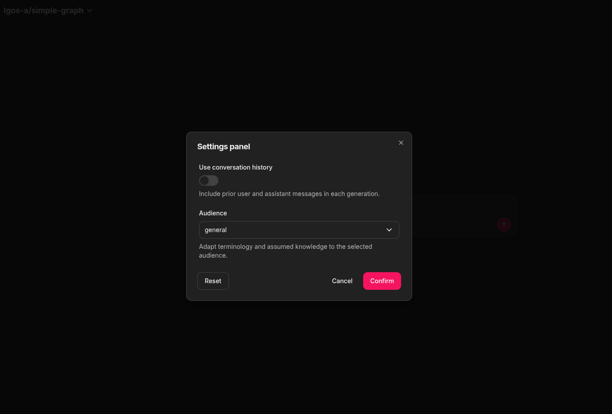
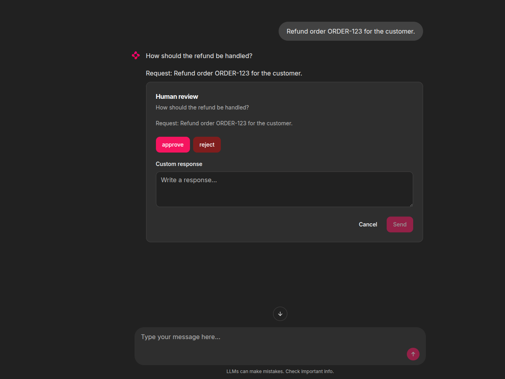

Chainlit Client¶
The included Chainlit UI is an optional OpenAI client of LGOS. It does not add routes or change the server contract.
The Chainlit project intentionally does not install or import the
langgraph-openai-serve Python package. It demonstrates that a UI integration
needs only the OpenAI wire contract. Its local declarations cover only LGOS
model metadata and link to their authoritative source files.
The server-tool profile has fixed opt-in switches for lgos_package_version
and web_search; advanced-graph has only the Web search Chat Settings
switch and receives gateway MCP tools separately through its advertised
capability. Chainlit knows the server-tool names and includes only selected
tools in the native Responses tools array; it does not discover those names
from model metadata. Package lookup uses a name-only custom declaration, while
search uses {"type":"web_search"}. LGOS completes selected server tools inside
the same Response, so Chainlit executes only returned function_call items. The
advanced graph enters note review when the user asks to remember or save
something, not through a UI setting.
Native URL-citation annotations become
clickable Chainlit source elements containing Markdown links, without changing
the replayed answer text.
Select one first-class gateway
Set OPENAI_GATEWAY_TYPE=litellm|bifrost once for both demo UIs. LiteLLM
uses managed Responses; Bifrost uses native Responses. Files also use the
selected gateway's normal route. Metadata comes from LiteLLM's native
/model/info or Bifrost's catalog-detail pass-through. Chainlit
never connects directly to the LGOS or Files containers and remains
Responses-only.
Run The UI¶
Create the local environment file and a Chainlit signing secret:
cp demo/.env.example demo/.env
uv run --directory demo/ui/chainlit_ui --locked chainlit create-secret
Put the generated value in CHAINLIT_AUTH_SECRET. Configure Chainlit's native
element storage with BUCKET_NAME, APP_AWS_*, and DEV_AWS_ENDPOINT.
Separately configure the central Files API with DEMO_API_FILES_BUCKET,
DEMO_API_FILES_S3_ENDPOINT, and DEMO_API_FILES_AWS_*. Replace every example
value before starting the UI; neither service reads the other's S3 settings.
Start the complete stack, including the gateway selected by COMPOSE_PROFILES:
With LiteLLM selected, this syncs model metadata before starting Chainlit.
If the gateway and backends are already running,
just demo/up lgos-chainlit
starts only Chainlit and PostgreSQL.
Both modes apply pending Chainlit schema migrations before the UI starts. Open
http://localhost:3002. See Docker Compose
for container endpoints.
When starting components independently with LiteLLM, sync model
metadata before using the UI. The full-stack Compose targets
do this automatically.
Profile discovery and settings read GET /model/info with the current gateway
credential. Entries with model_info.lgos become profiles; model_name is
sent unchanged to managed /v1/responses. There are no provider allowlists,
implicit prefixes, or per-provider catalog URLs.
With Bifrost selected, aggregate discovery finds each
provider, catalog detail uses /openai_passthrough/v1 with
x-model-provider, and inference uses native /openai/v1/responses with the
same provider header. The demo API owns the descriptions and capabilities.
Chainlit keeps the Responses model usable for plain text but marks it as
Limited functionality when an endpoint omits or strips them.
LiteLLM's managed /v1/models response contains only the standard model
fields, so it is not the UI catalog. The full model_info.lgos extension
supplies descriptions, features, and client-settings schemas in one response.
Selecting a profile rereads this endpoint so settings use current metadata
and model permissions. Errors do not trigger a fallback to LGOS.
The gateway selector owns routing; users explicitly configure its type and root URL. Browser login and gateway authorization are separate settings: mock and OAuth login can use a static key, while OAuth can optionally delegate the signed-in user's access token.
Gateway MCP¶
The backend derives one trusted /mcp connection from the selected gateway
root and uses the same credential as Responses and Files. The browser receives
no URL or bearer token, and user-provided servers remain disabled. After you
click Connect, Chainlit owns the session and discovers the tools authorized
by the gateway. It sends them only when the selected model advertises the
mcp_tools capability. mcp-postgres applies a fixed report allowlist at the
API boundary, while general-purpose graphs can use the gateway-authorized tool
catalog without knowing which MCP servers provide it.
The current database example is PostgreSQL Through Native MCP; see it for the complete request flow, read-only controls, and connection steps. Chainlit's official MCP guide documents the underlying lifecycle.
File Attachments¶
The UI uploads every file attached to the current user message through
client.files.create(..., purpose="user_data"). It then replaces the attachment
with a native Responses input_file part containing the returned file_id.
Files requests use the selected gateway's normal /v1 route. Bifrost assigns
them to its fixed lgos-files provider, while LiteLLM assigns them to its
configured litellm_proxy Files provider. Responses continue to use the
selected model provider. The demo therefore has one file namespace shared by
both inference providers.
The attachment button appears only for profiles that advertise file_inputs
and accepts up to five files of 10 MiB each per message. Select
lgos-a/file-input or lgos-b/file-input to process an attachment with the
dedicated demo graph.
If an OpenAI API caller sends a native file part to a
general graph such as simple-graph, LGOS preserves it, but that graph does not
resolve its central ID.
Chainlit 2.12.0 upload validation
Chainlit applies profile overrides to the browser and WebSocket session,
but its pinned /project/file validator
reads the global setting. The demo therefore leaves that route globally
enabled, hides the attachment control through native
ChatProfile.config_overrides,
and checks the effective session profile before uploading to the central
Files API. Remove this workaround once Chainlit's upload route validates
against the effective session configuration.
Chainlit's native S3 persistence remains responsible for restoring UI elements.
The OpenAI Files upload is the separate inference contract; the adapter does
not wait for a Chainlit persistence URL or put one in file_data. See
Accept And Display Files.
Runtime Settings¶
After a profile is selected, Chainlit:
- Reads the selected model's gateway metadata through the OpenAI client and uses
lgos.client_settings. - Renders supported JSON Schema properties as Chainlit Chat Settings.
- Restores saved values that still match the supported widget type or choice.
- Compares the selected values with the advertised defaults.
- Sends changed values as JSON text in
metadata.lgos_settingson every Responses request.
Booleans become switches, inline string enums become selects, and strings become text inputs. Other schema shapes are not rendered. The adapter checks only boolean/string types and select membership when restoring the UI; it does not interpret general JSON Schema constraints. LGOS remains the validation authority. If the required LGOS model extension is unavailable, Chainlit hides the controls, uses server defaults, and shows a transient Limited functionality warning after selection. Profile discovery itself stays list-only because descriptions and features arrive with the list response.

Runtime settings discovered from lgos-a/simple-graph and rendered as native
Chainlit controls.
The same panel includes a Chainlit-owned Stream response switch for every
profile. It defaults to enabled and selects responses.stream or
responses.create; it is not included in lgos_settings. With
streaming disabled, Chainlit waits for the complete response and sends the
answer once.
Chainlit may restore UI selections with a saved thread, but LGOS does not persist runtime settings. The adapter resends non-default values for every request that needs them. The underlying contract is documented in LangGraph Runtime Settings.
Persistence And Login¶
Authentication code is grouped under demo/ui/chainlit_ui/src/lgos_chainlit/auth/,
with its tests in demo/ui/chainlit_ui/tests/auth/. See the
Chainlit project README
for the module layout and targeted test commands.
Chainlit's PostgreSQL data layer stores users, threads, steps, and feedback.
Opening a stored thread restores its role/content transcript and continues with
the same login identity. The adapter also sends Chainlit's stable thread ID as
metadata.conversation_id on every Responses request, allowing Langfuse to group the
thread's per-request traces into one session. The persistent-plot-agent demo also
combines that value with the authenticated OpenAI user to scope its LangGraph
chart document. The transcript remains owned and resent by Chainlit; no chat
history is added to LGOS. See the
persistent plot agent ownership flow
for the API Store, Chainlit PostgreSQL, and S3 boundaries.
| Browser login | OAuth token forwarding | Gateway credential |
|---|---|---|
mock |
false |
OPENAI_GATEWAY_API_KEY |
oauth |
false |
OPENAI_GATEWAY_API_KEY |
oauth |
true |
Signed-in user's OAuth access token |
DEMO_CHAINLIT_LOGIN_TYPE=mock maps every login to the shared demo-user.
Keep OAuth token forwarding disabled and configure
OPENAI_GATEWAY_API_KEY. This is for local use only.
OAuth uses Authlib's OIDC integration with S256 PKCE, state/nonce validation,
and verified ID tokens. The stable sub claim identifies users. Set the exact
HTTPS issuer for discovery and register
${CHAINLIT_URL}/auth/oauth/${OAUTH_GENERIC_NAME}/callback in your provider.
HTTPS is required for OAuth, including its secure cookies; use mock mode for
plain-HTTP local development.
Chainlit's native OAuth prompt settings
are honored. Set OAUTH_PROMPT globally, or use OAUTH_GENERIC_PROMPT when
OAUTH_GENERIC_NAME=generic to override it for that provider.
DEMO_CHAINLIT_LOGIN_TYPE=oauth
CHAINLIT_URL=https://chat.example.com
DEMO_CHAINLIT_OAUTH_ISSUER=https://id.example.com
DEMO_CHAINLIT_OAUTH_CLIENT_AUTH_METHOD=client_secret_basic
OAUTH_GENERIC_CLIENT_ID=YOUR_CLIENT_ID
OAUTH_GENERIC_CLIENT_SECRET=YOUR_CLIENT_SECRET
OAUTH_GENERIC_NAME=generic
OAUTH_GENERIC_SCOPES="openid profile email groups"
OPENAI_GATEWAY_TYPE=litellm
OPENAI_GATEWAY_BASE_URL=https://litellm.example.com
DEMO_GATEWAY_HOST_URL=https://litellm.example.com
OPENAI_GATEWAY_API_KEY=TO_BE_FILLED
DEMO_CHAINLIT_ENABLE_OAUTH_TOKEN_FORWARDING=false
This authenticates users with SSO while sending the static Chainlit key to the gateway. Chainlit does not store or refresh provider tokens in this mode.
Scopes still apply when token forwarding is disabled
OAUTH_GENERIC_SCOPES is always requested during OAuth login. For login
only, use openid profile email groups. Disabling token forwarding does
not remove gateway scopes such as llm:invoke; unsupported scopes can
still prevent sign-in.
To delegate gateway authorization to the signed-in user instead:
DEMO_CHAINLIT_ENABLE_OAUTH_TOKEN_FORWARDING=true
DEMO_CHAINLIT_OAUTH_ENCRYPTION_KEYS='["YOUR_GENERATED_FERNET_KEY"]'
OAUTH_GENERIC_SCOPES="openid profile email groups offline_access llm:invoke"
OPENAI_GATEWAY_BASE_URL=https://litellm-sso.example.com
DEMO_GATEWAY_HOST_URL=https://litellm-sso.example.com
Chainlit ignores the shared static key in delegated mode and does not
register its static native MCP connection. Open WebUI and the gateway
services can continue using OPENAI_GATEWAY_API_KEY.
Match DEMO_CHAINLIT_OAUTH_CLIENT_AUTH_METHOD to the registered client:
client_secret_basic (default) or client_secret_post. Authlib uses it for
code exchange and, in delegated mode, refresh and revocation. Discovery must
advertise S256 PKCE and support the selected authentication method.
For delegated mode, request your gateway's permission (llm:invoke in
this example). The token's audience must identify the gateway API, not
merely the login client.
For providers using RFC 8707 resource indicators,
set DEMO_CHAINLIT_OAUTH_RESOURCE; Chainlit then includes it in authorization,
code exchange, and refresh requests. Otherwise leave it unset and configure
the audience using the provider's client/scopes settings.
For example, with PocketID set DEMO_CHAINLIT_OAUTH_RESOURCE=https://llm.example.com
to the exact resource identifier registered under its APIs, and grant the
client user-delegated llm:invoke access. With Keycloak, an audience mapper
and linked client scope can supply the audience and permission without resource.
PocketID is a deployment example, not a dependency of Chainlit's auth code.
With token forwarding enabled, Chainlit sends the access token as
Authorization: Bearer ....
The gateway must accept delegated tokens on Responses, Files, and native
GET /model/info. The custom LiteLLM image grants the native
openai_routes and model_info_routes route groups; no LGOS-specific
path allowlist is needed. The UI uses the list endpoint, which applies
LiteLLM's caller model permissions, and selects the model locally.
In delegated mode, Chainlit keeps credentials encrypted in
lgos_chainlit_oauth_sessions, created at startup. Each login has a distinct
credential record and an opaque session ID in Chainlit's signed cookie;
access/refresh tokens never enter that cookie, user metadata, or chat history.
Sessions expire after Chainlit's configured user_session_timeout. A new
login replaces this browser's previous local grant, without replacing other
browsers' grants.
Chainlit refreshes tokens shortly before expiry. A database row lock serializes refresh across tabs and workers. Every model, response, and file request resolves the current token from the browser's login, so an open chat uses refreshed credentials without reconnecting. Missing credentials require another login; delegated mode never falls back to the static key.
In delegated mode, logout deletes the local grant before attempting provider
token revocation. A provider outage does not restore gateway credentials. It
does not perform global identity-provider logout or cancel in-flight streams.
Provider revocation policy may invalidate related grants; local browser grants
are otherwise independent. Chainlit's native logout handler then clears the
auth cookie and runs any registered
@cl.on_logout hook,
preserving the hook's response and cookie customizations. Static-key SSO has
no grant to delete or revoke.
Logout boundary
With forwarding enabled, logout clears the browser cookie and prevents new gateway credential lookups for that login, including from an already-open chat. A request that already obtained an access token may still complete. Chainlit's UI JWT is not denylisted: a copied, unexpired cookie can still authenticate to native UI/history routes until its JWT expires. Gateway-grant expiry or deletion does not revoke that UI JWT. If gateway credentials are lost, sign out and sign in again; profile discovery has no models to offer without them.
Delegated token encryption
Configure a separate encryption key; CHAINLIT_AUTH_SECRET signs
browser/state cookies only. Generate a key from demo/ui/chainlit_ui:
DEMO_CHAINLIT_OAUTH_ENCRYPTION_KEYS is an ordered JSON list. For a rolling
rotation, deploy [old, new] everywhere first, then [new, old]. New and
refreshed grants use the first key. Keep the old key for the maximum
session lifetime after the last worker switches, then remove it. Expired
records are removed at startup and on subsequent logins.
This deployment supports one issuer. Changing it requires invalidating existing browser sessions and any gateway grants.
LiteLLM still owns JWT validation, model permissions, budgets, and spending attribution.
Supported protocol contract
Chainlit supports a confidential OIDC client with a shared secret and
S256 PKCE. Token responses must supply an expiry (expires_in or
expires_at, normalized by Authlib); automatic refresh also requires
a refresh token. Private-key client authentication and
provider-specific authorization parameters are not implemented.
The gateway must separately support the provider's access-token format;
OIDC login alone does not guarantee API-token interoperability.
Browser login is separate from bearer-token protection for the LGOS /v1 API.
See Authentication.
Interrupt Demo¶
Run the dedicated HITL UI by adding DEMO_CHAINLIT_UI_FILE=hitl to the
local Chainlit command under Run The UI.
Initial requests need no interrupt metadata. The HITL client implements the
Responses interrupt continuation:
it stores the paused Response ID, asks for every call in the batch, submits only
matching function_call_output items, and repeats when the graph pauses again.
Each response is shown with Chainlit's native
AskElementMessage
and a small custom element. Choice buttons and the allowed free-text field submit
one {resume: ...} value, so the client depends only on the standard tool-call
batch, not the graph topology. See the shared
interrupt walkthrough.
The advanced graph uses the same review UI for real note uploads after an explicit natural-language save request. The payload displays the exact note content and destination before approval. Knowledge citations stay in the answer as filenames and provider file IDs; the default S3 Files connection is not a bridge to the graph's configured vector service.

Chainlit renders the LangGraph interrupt as native choices with an optional custom response field.
Reconnect recovery and its boundary
The adapter stores the paused Response ID and exact function-call batch on the same
model-context-excluded Chainlit message that displays the current prompt.
Its
on_chat_resume
hook restores the newest pending continuation and reattaches its custom review form,
including the free-text field when allowed, after the pinned Chainlit host
hydrates the displayed thread. Refreshing abandons only the old live prompt;
it neither duplicates the persisted message nor rejects or resumes the graph.
Chainlit queues data-layer writes asynchronously, with no public flush API,
so a process crash can still occur before that message reaches PostgreSQL.
Once stored, cancellation, reload, or worker loss before the resume request
does not require API-side chat history.
The demo does not durably cache a terminal response or a later interrupt response that has not yet reached Chainlit. If the API accepts a resume but the worker loses the following response, resubmitting the older continuation fails safely as stale; the completed output or newer batch cannot be reconstructed from that old ledger. Applications requiring recovery across that window need a durable result/pending-response handoff in their UI boundary. See Interruptible Human Review for server-side checkpoint retention.
Streaming, Events, And Citations¶
Both bundled Chainlit clients use OpenAI Responses. In the general client's
streaming mode, the SDK stream manager owns event accumulation and supplies
the terminal Response; the adapter streams
answer text into the assistant message. Messages without the optional phase
field are also treated as answers. It maps completed
phase="commentary" items to a native
TaskList, completing
each prior task when the next status arrives and completing the list when the
full response succeeds. Clicking Stop marks the active task as failed and
closes the Responses stream; incomplete assistant text remains visible but is
excluded from later model context. Both streaming and non-streaming requests
require a completed Response before displaying files or accepting a successful
turn. Failed interrupt resumes leave the saved continuation intact.
Native refusal text is displayed as the assistant's explanation. Incomplete responses report their native reason, retain any already streamed text for the user, and do not execute client functions. Failure and incomplete events are handled directly because the SDK's final-response helper requires completion.
Transcript replay labels assistant answers as final_answer and preserves
explicit phase values, following OpenAI's
assistant phase guidance.
The persistent plot graph returns a standard display_file function call.
Chainlit downloads the Plotly JSON through the OpenAI Files API, reconstructs
the figure with plotly.io.from_json, and persists a native
Plotly element with
interactive hover, zoom, and legend controls. It returns the matching
function_call_output before requesting the final answer. Image files still
use the native Image element.
Each continuation retains the original input, including instructions and file
references, then appends the complete Response output and matching tool results.
Streaming and non-streaming modes retain final-answer text from every call in
that exchange and exclude commentary from the answer.
The official data layer stores the element in the configured S3-compatible
bucket, so it returns with the thread.
The UI renders Markdown links, images, and inline citation markers from assistant content. Shared prompts and graph behavior are documented under Events And Citations and Persistent Plot Agent. A schema-normalizing proxy must preserve standard Responses items and events.
Settings Reference¶
Use .env.example
for demo environment values. The tables below explain their roles, not their defaults.
Shared gateway settings are documented in Stack Settings. Chainlit-specific settings:
| Setting | Notes |
|---|---|
DEMO_CHAINLIT_HITL_MODEL |
Model selected by the HITL UI. |
DEMO_CHAINLIT_UI_FILE |
Chainlit target: simple or hitl. |
DEMO_CHAINLIT_LOGIN_TYPE |
Browser login: mock or oauth. |
DEMO_CHAINLIT_ENABLE_OAUTH_TOKEN_FORWARDING |
false (default) uses the static key. true requires OAuth login and forwards each user's access token. |
DEMO_CHAINLIT_OAUTH_RESOURCE |
Optional RFC 8707 resource identifier passed in OAuth authorization and token requests. |
DEMO_CHAINLIT_OAUTH_ISSUER |
Required for oauth. Exact HTTPS issuer; endpoints and signing keys come from discovery. |
DEMO_CHAINLIT_OAUTH_CLIENT_AUTH_METHOD |
client_secret_basic (default) or client_secret_post; used for code exchange and delegated refresh/revocation. |
DEMO_CHAINLIT_OAUTH_ENCRYPTION_KEYS |
Required only for OAuth token forwarding. JSON list of Fernet keys, primary encryption key first. |
CHAINLIT_UTILS_MIGRATIONS_TABLE |
Chainlit-utils schema migration ledger. |
CHAINLIT_UTILS_MODEL_CONTEXT_EXCLUDED_KEY |
Persisted metadata key for UI-only messages. |
See the bundled Bifrost gateway for the Compose endpoint and adapter behavior.
Unprefixed Chainlit and OIDC integration settings:
| Setting | Notes |
|---|---|
DATABASE_URL |
Required. PostgreSQL data-layer URL. |
CHAINLIT_AUTH_SECRET |
Required. Browser-session and temporary OAuth-state signing secret. |
CHAINLIT_APP_ROOT |
Tracked UI configuration and welcome Markdown. |
BUCKET_NAME |
Required. S3-compatible bucket for native elements. |
APP_AWS_ACCESS_KEY |
Required. S3 access key. |
APP_AWS_SECRET_KEY |
Required. S3 secret key. |
APP_AWS_REGION |
Required. S3 signing region. |
DEV_AWS_ENDPOINT |
Required. Custom S3-compatible endpoint URL. |
STORAGE_EXPIRY_TIME |
Lifetime in seconds for resumed element URLs. |
CHAINLIT_URL |
Required for oauth. External HTTPS origin for callbacks. |
OAUTH_GENERIC_CLIENT_ID |
Required for oauth. OAuth client ID. |
OAUTH_GENERIC_CLIENT_SECRET |
Required for oauth. OAuth client secret. |
OAUTH_GENERIC_SCOPES |
Required for oauth. Space-separated scopes. |
OAUTH_GENERIC_NAME |
Provider ID used in the callback path. |
OAUTH_PROMPT |
Optional prompt parameter for every Chainlit OAuth provider. |
OAUTH_GENERIC_PROMPT |
Optional prompt override for the configured generic provider. |
The element bucket must allow browser CORS GET and HEAD requests from the
Chainlit origin. CORS only permits the cross-origin response; the object still
requires Chainlit's time-limited presigned URL. See
Amazon S3's CORS guide.
The demo requires Chainlit 2.12.0 or newer. Review Chainlit's current MCP and PostgreSQL guidance when updating because those native contracts are release-specific.
Production Notes¶
- Set
DEMO_CHAINLIT_LOGIN_TYPE=oauthin production; mock login provides no access control or user isolation. - Choose static-key or delegated gateway authorization explicitly with
DEMO_CHAINLIT_ENABLE_OAUTH_TOKEN_FORWARDING. - The trusted MCP gateway connection uses the same
OPENAI_GATEWAY_API_KEYas Responses and Files. It is not registered when delegated token forwarding is enabled. - Keep OAuth, signing, and object-storage secrets outside source control.
- Restrict
allow_originsto the deployed HTTPS origin. - Configure session affinity for multiple UI workers and object storage for native file and chart persistence. File-capable profiles enable attachments.
- Run
lgos-chainlit-setupbefore starting or replacing workers.
See Chainlit's documentation for password callbacks, OAuth, PostgreSQL persistence, and deployment.